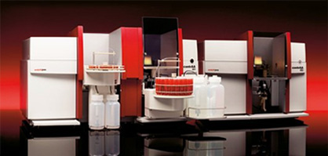

contrAA® 300

Мультиэлементный анализ
Дуговая ксеноновая лампа высокого и сверхвысокого давления является источником стабильного и интенсивного излучения в спектральном диапазоне 190 - 900 нм. Монохроматор высокого разрешения позволяет выделить из спектра любую длину волны, соответствующую поглощению любого элемента. Использование источника непрерывного спектра делает возможным определение ряда неметаллов, недоступных для анализа в классической атомно-абсорбционной спектрометрии.
Высокая производительность
Использование единственного источника света позволяет снизить физические и эксплуатационные затраты на проведение анализа и одновременно повысить производительность. Время перестройки оптики с одной длины волны на другую составляет не более 5 секунд. Таким образом, производительность прибора может достигать 12 элементопределений в минуту.
Высокое качество анализа
Интенсивность излучения этой лампы в среднем в 100 раз превышает интенсивность излучения обычной ЛПК во всем спектральном диапазоне. Благодаря высокой плотности излучения источника достигаются улучшенное соотношение сигнал-шум и, следовательно, более низкие пределы обнаружения. Уникальная система полупроводниковых ПЗС-детекторов позволяет учитывать и эффективно корректировать спектральные помехи, вызванные влиянием элементов матрицы, структурированием пламени или молекулярными структурами.
| Характер-ка | Устройство для введения образца в набивные | Устройство для введения образца с делением / без деления потока | Устройство для введения сильно летучих веществ | Устройство для введения образца с программируемым испарением | Устройство для холодного ввода |
| Макс. температура | 400 °С | 400 °С | 400 °С | 400 °С | 400 °С |
| Диапазон давлений (psi) | 0 – 100 | 0 – 100, 150 | 0 – 100 | 0 – 100 | 0 – 100 |
| Диапазон скоростей потока (мл/мин) | 0 – 200 | 0 – 1250 | 0 – 100 | 0 – 200 | 0 – 100 |
| Макс. деление потока | 7500:1 | 100:1 | 7500:1 |
Программирование глубины погружения иглы
- Возможность проведения парофазного пробоотбора при температуре окружающей среды
- Возможность ввода внутреннего стандарта, разбавления
- Возможность дериватизации пробы
- Режим экономии растворителя при промывке шприца после ввода пробы
- СКО площадей пиков: < 0,3%
Дополнительные материалы:
скачать полное описание (3.20 Мб)
скачать полное описание (3.20 Мб)
скачать полное описание (3.20 Мб)